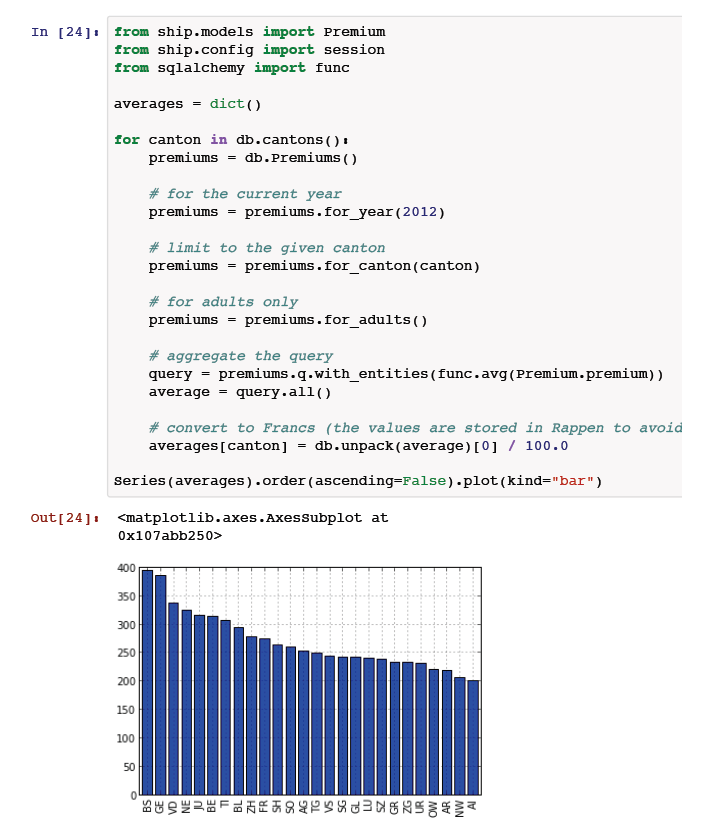

SHIP - Swiss Healthcare Insurance Premiums
Im Rahmen der leidigen Diskussion um den mutmasslichen "Hackerangriff" (http://www.nzz.ch/aktuell/schweiz/bund-liess-comparis-hackerangriff- durchgehen-1.17547910) von Camparis (www.comparis.ch) auf den Prämienrechner des Bundesamts für Gesundheit (www.priminfo.ch) haben wir uns gefragt, wie offen die Prämien-Daten des BAGs verfügbar sind.
Wir haben also beim BAG nachgefragt und erhielten sehr prompt eine Antwort inkl. Link auf den Datensatz mit allen Prämien: http://www.bag.admin.ch/themen/krankenversicherung/01156/02446/index.html?lang=de
Vielen Dank und chapeaux BAG!
Der Datensatz des BAG liegt im Excel-Format vor und ist daher nicht ganz so einfach zu verarbeiten. Wir haben daher noch einmal beim BAG nachgefragt, ob die Daten auch in "Rohkost" verfügbar sind. Das BAG war wiederum sehr hilfsbereit und hat uns Daten sogleich im CSV-Format zu kommen lassen.
Mit diesem Datensatz war es uns einfach möglich, ein kleines Tool für die Prämiendaten zu entwickeln. SHIP (Swiss Healthcare Insurance Premiums) bietet im jetzigen Stadium folgende Funktionalität:
- Einlesen der Prämiendaten in eine beliebige SQL-Datenbank
- Verständliche Feldnamen
- Einfache Abfragen auf die Datenbank
Das Ziel wäre, für die Datenbank eine öffentliche API zu entwickeln.
Wir sind beim Swiss Open Data Hackday zum Thema Health (http://make.opendata.ch) dabei und hoffen da gemeinsam mit anderen die Arbeiten an der API vorantreiben zu können.
Um den unmittelbaren Nutzen der API zu zeigen, könnte man eine kleine Website mit einem Formular zur Prämienabfrage bauen. Auch wäre es möglich, die über die API gewonnenen Daten zu visualisieren.
Idealerweise würde durch die API ein ganz neuer Möglichkeitsraum geöffnet und es entstünden Applikationen, an die wir selbst nie gedacht hätten.
SHIP - Swiss Healthcare Insurance Premiums auf GitHub: https://github.com/seantis/ship

PDFresult of ipython notebook example:
https://github.com/seantis/ship/blob/master/docs/examples.pdf?raw=true